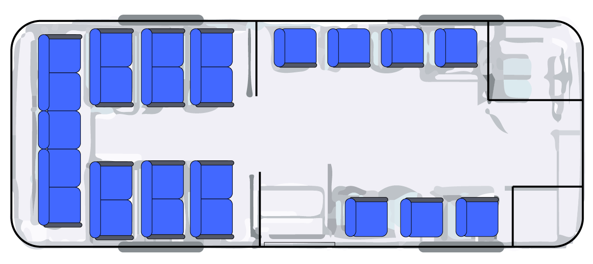

사회적 거리 두기 게임 안내
다른 사람과의 대면 접촉을 제한하는 것이 코로나바이러스 감염증 2019(COVID-19) 전파를 줄이는 가장 좋은 방법입니다. 사회적 거리두기는 "물리적 거리두기"라고도 하며 집 밖에서 다른 사람들과의 거리를 유지하는 것입니다. 사회적 또는 물리적 거리두기를 실천하기 위해서는 다른 사람들과 최소 6피트 거리(대략 팔 2개 길이)를 유지해야 합니다.버스에 사람이 많습니다!
버스에 있는 사람들과 적절한 거리를 두어 사회적 거리두기를 실천하세요!
버스 우측 아래에 보이는 노란색 아이콘(플레이어)을 드래그하여 움직이세요.
플레이어를 적절히 움직여 모든 승객과의 거리를 250 이상으로 만드세요!!
클릭하여 게임 진행하기

모든 승객과의 거리를
'250' 이상으로 만드세요!
승객1와의 거리:
승객2와의 거리:
승객3와의 거리:
승객4와의 거리:
승객5와의 거리:
승객6와의 거리:
승객7와의 거리:
승객8와의 거리: